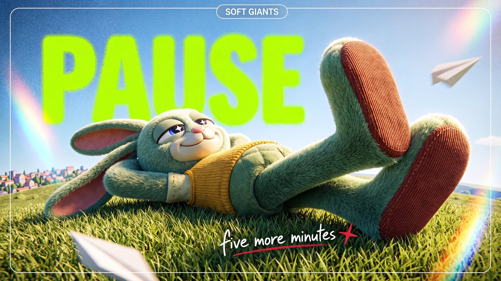
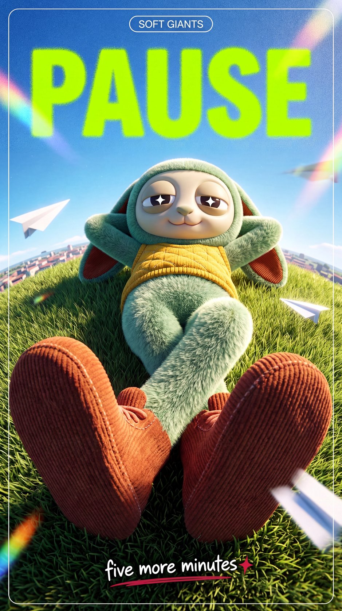
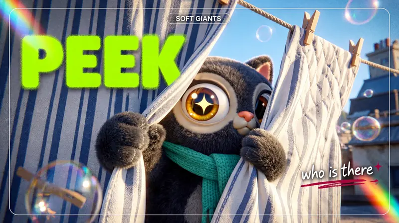
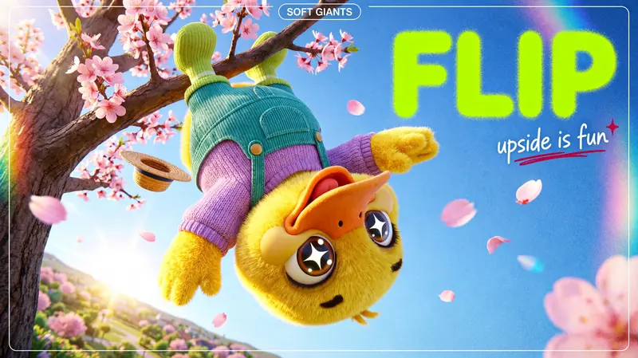
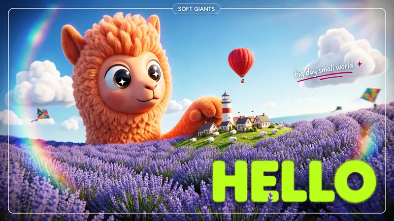

Type Posters · AI image style prompt
Soft Giants
Plush-and-vinyl 3D toy-mascot giants in wide-angle scale play: creatures peek, hang and loom over tiny worlds with fuzzy acid-lime spray titles, star-highlight eyes and rainbow light leaks.


4 example cases
Same style.json, different subjects. Each case's values are in the examples section of the JSON.



What this style does
Original 3D toy-mascot giant posters in plush and vinyl: wide-angle near-far scale exaggeration, creatures playing with the frame and gravity, giant acid-lime spray-edged fuzzy titles, four-point star eye highlights, rainbow light leaks and drifting particles.
Signature traits
- Premium stylized 3D toy-mascot render of an original non-human plush creature: matte vinyl face, dense plush fur with visible fibres, stitched felt, knit or quilted clothing with readable weave.
- Huge glossy eyes, each carrying exactly one crisp four-point star highlight; soft warm translucency at ears and fingertips.
- 16mm wide-angle lens with violent near/far exaggeration: the nearest feature (face, paw or feet) is enormous at the lens while the world behind is small, often on a curved horizon.
- The creature always plays with the frame or with gravity (peeking, hanging upside down, looming over a tiny world, sprawling toward the lens); never a neutral standing pose.
- One short title word in giant chunky rounded sans capitals, acid lime, with fuzzy airbrushed spray-grain edges, interlocked in depth: partly behind and partly in front of scene elements.
- Bright sunny daylight with warm rim light, soft rainbow light-leak streaks at two frame edges, blurred drifting foreground particles and fine film grain.
style.json
{
"schema_version": "2.2",
"style_name": "Soft Giants",
"style_slug": "soft-giants",
"style_version": "1.0",
"category": "Type Posters",
"style_summary": "Original 3D toy-mascot giant posters in plush and vinyl: wide-angle near-far scale exaggeration, creatures playing with the frame and gravity, giant acid-lime spray-edged fuzzy titles, four-point star eye highlights, rainbow light leaks and drifting particles.",
"environment_variables": {
"ASPECT_RATIO": "9:16 or 16:9",
"STYLE_FIDELITY_ANCHORS": "Runtime shared CORE and FLEX rules",
"SOURCE_CONTENT_TO_AVOID": "Runtime exclusions from all four references",
"SUBJECT": "Original non-human plush creature and clothing",
"SUBJECT_ACTION": "Frame or gravity play and camera",
"MAIN_TEXT": "Exact short title word",
"DESIGN_DIRECTION": "Title, hero, particles and tagline placement, including landscape adaptation"
},
"style_fidelity_anchors": [
"[CORE] Premium stylized 3D toy-mascot render of an original non-human plush creature: matte vinyl face, dense plush fur with visible fibres, stitched felt, knit or quilted clothing with readable weave.",
"[CORE] Huge glossy eyes, each carrying exactly one crisp four-point star highlight; soft warm translucency at ears and fingertips.",
"[CORE] 16mm wide-angle lens with violent near/far exaggeration: the nearest feature (face, paw or feet) is enormous at the lens while the world behind is small, often on a curved horizon.",
"[CORE] The creature always plays with the frame or with gravity (peeking, hanging upside down, looming over a tiny world, sprawling toward the lens); never a neutral standing pose.",
"[CORE] One short title word in giant chunky rounded sans capitals, acid lime, with fuzzy airbrushed spray-grain edges, interlocked in depth: partly behind and partly in front of scene elements.",
"[CORE] Bright sunny daylight with warm rim light, soft rainbow light-leak streaks at two frame edges, blurred drifting foreground particles and fine film grain.",
"[CORE] Designed overlay: thin white hairline rounded-corner frame, one small outlined pill label, one small handwritten tagline with crimson scribble underline and a crimson four-point star.",
"[FLEX] Creature species, clothing colour, setting and particle type change per case while materials, lime title, crimson accents and light stay fixed.",
"[FLEX] Landscape versions are recomposed natively with the same creature and title, never cropped from the vertical."
],
"source_content_to_avoid": [
"All existing IP characters and brands: Phineas, Ferb, Perry the Platypus, Chupa Chups mascot or logo, Dreamina, Annecy, SHIQI, Photoshop badge.",
"R1 pairing of tree trunk plus wooden fence plus radio, and its lowercase word 'respira'.",
"R2 pairing of venetian blinds plus lowered sunglasses plus elf ears with chains, heterochromia, and the 'Sleuth Girl' serif logo.",
"R3 pairing of rope climbing net plus round yellow glasses plus checkerboard jumpsuit and yellow boots, and the 'Forever Fun' script.",
"R4 pairing of butterfly on a human nose plus Moai statues plus pointing hands.",
"No source words, creator handles, signatures, dates or logos; no human children."
],
"visual_deconstruction": {
"genre": "Stylized 3D toy-mascot character poster.",
"energy": {
"density": "65–75% active surface, sky or field keeps 25–35% calm.",
"layering": "Foreground particles, hero, title, mid world, sky; title sits inside the depth stack.",
"disorder": "Drifting blurred particles and light leaks only; render itself is clean.",
"tension": "Lens-touching scale jumps, upside-down or looming bodies, curved horizons."
},
"fusion": {
"genre": "All four: 3D stylized character poster; all identities replaced.",
"palette": "R1 acid lime title and green daylight, R3 candy red/yellow/blue clothing, R2 warm brown shadows and crimson accent, R4 pink skin tones and soft sky.",
"finish": "R3 plush and textile fibres + R2 doll vinyl skin and glossy star eyes + R1 film grain and light leaks.",
"type": "R1 fuzzy spray-edged giant word made uppercase and rounded; R2 four-point star as crimson accent.",
"layout": "R2 peeking through an aperture, R3 upside-down wide-angle, R4 giant face over tiny curved world, R1 relaxed sprawl with drifting leaves.",
"secondary": "R1 hairline frame, pill label and handwritten tagline.",
"balance": "R1 30%, R2 20%, R3 30%, R4 20%."
},
"grammar": [
"Tactile toy render",
"Wide-angle scale play, fuzzy spray type, light leaks"
],
"signature": {
"R1": "Tree+fence+radio and cartoon IP replaced by hilltop sprawl with paper planes.",
"R2": "Blinds+sunglasses+elf ears replaced by laundry sheets and a plush cat-owl.",
"R3": "Rope net+glasses+checker suit replaced by blossom branch and quilted bear.",
"R4": "Human face+butterfly+Moai replaced by plush giant, balloon and lighthouse."
},
"series_constants": "Plush/vinyl materials, star-highlight eyes, acid lime fuzzy title, crimson star and scribble, white hairline frame, sunny light with rainbow leaks."
},
"composition": {
"ratio_pair": "9:16 / 16:9, generate natively",
"structure": "Title occupies 20–30% of the frame and is interlocked in depth.",
"placement": "Sky-behind-body / low behind sheet / upper sky behind legs / bottom field."
},
"typography": {
"class": "Chunky rounded condensed sans capitals with fuzzy airbrushed spray-grain edges.",
"primary": "Only MAIN_TEXT is large; spell exactly.",
"texture": "Spray grain on letter edges only; small handwritten tagline; never a signature tag."
},
"color_palette": {
"title": "acid lime #B8F23A",
"accent": "crimson #E0263C",
"sky": "clear blue #6FB8F0",
"nature": [
"grass #5FAE3A",
"lavender #A58BE0"
],
"warm": [
"rust #B5562E",
"mustard #E2B23A",
"coral #F08A78"
],
"neutral": "cream #F6EAD2"
},
"image_treatment": {
"base": "Clean high-quality 3D render with tactile fibres and soft subsurface skin; no flat illustration.",
"local_effects": "Rainbow light leaks on two edges, motion-blurred foreground particles, fine film grain, fuzzy title edges.",
"light": "Sunny daylight with warm rim light in every case."
},
"design_rules": [
"Hero creature is the focal point and touches or nearly touches the lens.",
"Title is giant, lime, fuzzy-edged and inside the depth stack.",
"Every sample shows all four reference contributions.",
"Original non-human creatures only; no brands."
],
"do": [
"Exaggerate scale and lens distortion.",
"Give each case a different frame-play action and title position.",
"Check title spelling enlarged."
],
"avoid": [
"Neutral standing mascot shot.",
"Flat 2D illustration or realistic human children.",
"Any source character, logo or signature pairing."
],
"prompt_template": "Create one full-bleed {ASPECT_RATIO} poster in the Soft Giants style.\nRender: premium stylized 3D toy-mascot animation render; matte vinyl face, dense plush fur with visible fibres, stitched felt, knit or quilted clothing; huge glossy eyes each with one crisp four-point star highlight.\nCamera: 16mm wide-angle, nearest feature enormous at the lens, world behind small.\nSubject: {SUBJECT}\nAction/camera: {SUBJECT_ACTION}\nComposition: {DESIGN_DIRECTION}\nTitle, exact: \"{MAIN_TEXT}\", spelled letter by letter, giant chunky rounded sans capitals in acid lime with fuzzy airbrushed spray-grain edges, partly behind and partly in front of scene elements.\nOverlay: thin white hairline rounded-corner frame; one small outlined pill label 'SOFT GIANTS'; small white handwritten tagline with crimson scribble underline and crimson four-point star.\nLight: bright sunny daylight, warm rim light, rainbow light-leak streaks at two edges, blurred drifting particles, fine film grain.\n{STYLE_FIDELITY_ANCHORS}\nExclude: {SOURCE_CONTENT_TO_AVOID}",
"negative_prompt": "Existing IP characters, brand logos, Phineas and Ferb, Chupa Chups, venetian blinds with sunglasses, rope net with round glasses, butterfly on nose, Moai, human children, signatures, creator handles, watermark, flat 2D illustration, neutral standing pose, tiny title, sharp clean title edges, misspelled title, extra limbs.",
"examples": [
{
"case_name": "lazy-hill",
"values": {
"MAIN_TEXT": "PAUSE",
"SUBJECT": "A lanky sage-green plush hare creature with long floppy ears lined in rust corduroy, cream vinyl face, mustard knit vest.",
"SUBJECT_ACTION": "Lying on its back on a grassy hilltop, arms behind head, legs crossed; ground-level 16mm lens right at its huge corduroy-soled feet, body receding, tiny town far below.",
"DESIGN_DIRECTION": "Feet lower foreground, PAUSE huge in the sky behind the body, one foot overlapping a letter; drifting paper planes as particles; tagline 'five more minutes'. Landscape: body stretches left to right, feet at right lens, title upper left."
}
},
{
"case_name": "laundry-peek",
"values": {
"MAIN_TEXT": "PEEK",
"SUBJECT": "A round charcoal plush cat-owl creature with cream vinyl face, amber eyes and a tiny coral nose, wearing a teal knit scarf.",
"SUBJECT_ACTION": "Parting two sunlit striped bed sheets on a rooftop clothesline with stitched paws near the lens, one eye enormous in the gap, the other half hidden.",
"DESIGN_DIRECTION": "Face fills the upper two thirds, sheets form side curtains, PEEK low, partly tucked behind a sheet fold; clothes pegs and soap bubbles as particles; tagline 'who is there'. Landscape: gap off-centre right, title left on the sheet."
}
},
{
"case_name": "blossom-flip",
"values": {
"MAIN_TEXT": "FLIP",
"SUBJECT": "A fluffy butter-yellow plush duckling creature with a broad orange felt beak, lilac knit sweater, teal corduroy dungarees and lime striped socks.",
"SUBJECT_ACTION": "Hanging upside down by its knees from a blossoming tree branch, shot from below so the upside-down face is closest and huge, arms dangling at the lens, small woven straw hat falling.",
"DESIGN_DIRECTION": "Branch crosses the top, face lower centre, FLIP right-side-up across the upper sky behind the legs; pink petals as particles; tagline 'upside is fun'. Landscape: branch diagonal, creature left, title right."
}
},
{
"case_name": "horizon-hello",
"values": {
"MAIN_TEXT": "HELLO",
"SUBJECT": "A giant apricot-orange curly-wool plush alpaca creature with a tall fluffy topknot, long upright ears and a slim peach vinyl face.",
"SUBJECT_ACTION": "Its colossal face rises behind a curved lavender field and a tiny seaside village, chin on the hills, eyes looking down at a tiny red hot-air balloon by its nose, one plush paw curled behind a tiny lighthouse.",
"DESIGN_DIRECTION": "Face fills the upper 60%, curved fisheye horizon, HELLO on the lavender field at the bottom with flowers overlapping letter bases; tiny kites as particles; tagline 'big day small world'. Landscape: face left, village and balloon right, title lower right."
}
}
]
}